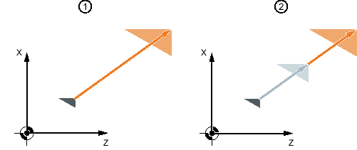

Für die aktive Bearbeitungsebene sowie für die Werkzeugachse können Sie einen Maßstabsfaktor eingeben. Die programmierten Koordinaten werden dann mit diesem Faktor multipliziert.
① | Skalierung neu |
② | Skalierung additiv |
Siehe auch:
Skalierung
Koordinatentransformation definieren